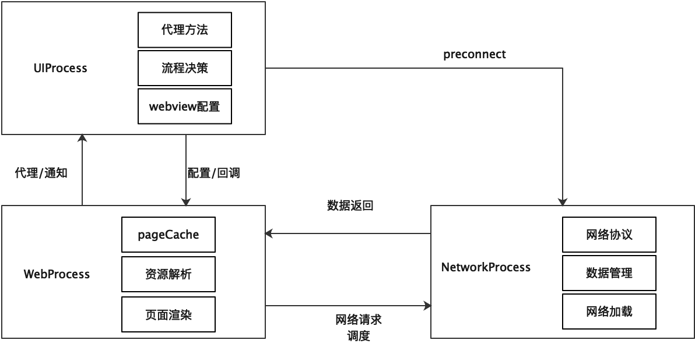

WebKit 进程
在 iOS 系统中，通常一个应用对应一个进程，但是在 WebKit 的发展过程中，基于稳定性与安全性考虑，引入了多进程的概念，避免单一页面的异常影响整体 app 运行，首先本文简单介绍下几个常见的 WebKit 进程，如下所示。
UIProcess
APP 所在进程，WKWebView 代码和 WebKit 框架已加载到你的进程空间中；主要负责与 WebContent 进行交互，与 APP 在同一进程中，可以进行 WebView 的功能配置，并接收来自 WebContent 进程的各类消息，配合业务代码执行任务的决策，例如是否发起请求，是否接受响应等。
WebContent
又称 WebProcess，JS 和 DOM 内存分配所在的位置，即网页内容渲染与 js 执行所处进程；该进程对应的是每一个新开的网页，该进程视内存情况可进行复用，某一 WebContent 进程的异常并不会影响到主 app 进程，常见的异常现象为白屏。
配置同一 WKProcessPool 的多个 WKWebView 共享的是同一 WebContent 进程池，该配置未限制 WebContent 进程数量，而是共享进程池。
主要负责页面资源的管理，包含前进后退历史，pageCache，页面资源的解析、渲染。并把该进程中的各类事件通过代理方式通知给 UIProcess。
Network Process
负责发出与 Web 请求关联的基础网络请求；无论多 WKWebView 还是单 WKWebView 场景，都只有唯一的 NetWorking 进程，这种设计主要便于网络请求管理以及保证网络缓存、cookie 等管理的一致性。
NetworkProcess 也是通过封装的 NSURLSession 发起并管理网络请求的。但不同的是，这一过程中有较多的网络进度的回调工作以及各类网络协议管理，比如资源缓存协议、HSTS 协议、cookie 管理协议等。
Storage Process
用于数据库和服务工作者的存储。

代理方法
WKWebview 代理主要是 WKUIDelegate 以及 WKNavigationDelegate 两部分。
WKNavigationDelegate
WKNavigationDelegate 可以分为页面请求以及页面渲染两部分。
1 | //页面请求部分 |
其他
js 注入相关
1 | //注入宽度自适应标签 |